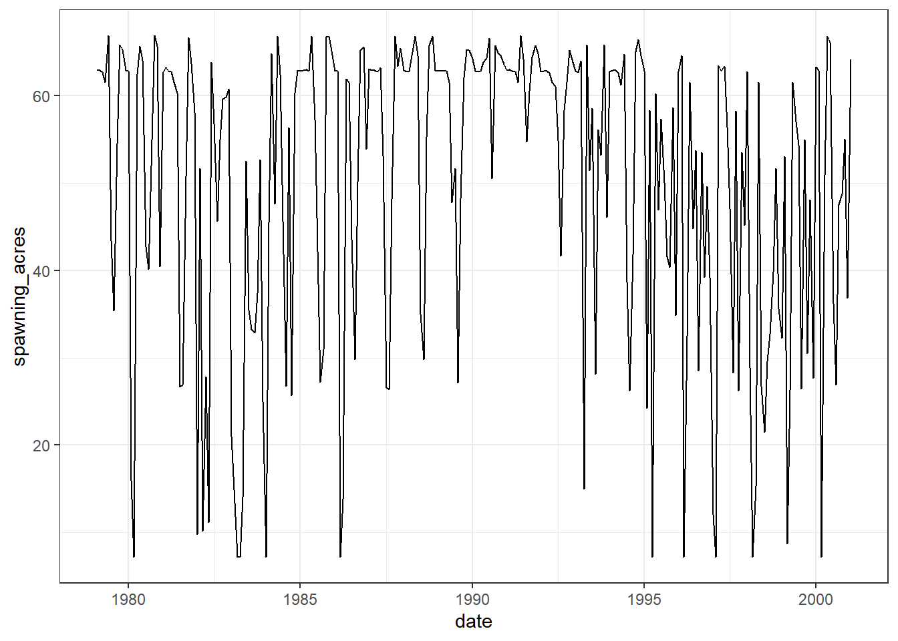

Gravel scaledown is summarized to a single flow to fraction of movement curve to represent the entire area of interest. This process is shown below as well as the output.
Transport curves for 4 different models are provided, each of these is defined for set of flows and at a set of river mile locations. We compute a single curve from these by first extracting the minumum transport from each of the 4 curves at corresponding river mile and flow values. After this we summarize again, this time across all river miles. We end up with a single curve with shown below.
Note: our choice choosing the minimum in the first summary above is somewhat arbitraty and can be easily updated
There are number of scale-downs we peform to the transport curves to better match observed data. The first is based on size threshold. Given a flow we assume only a fraction of gravel is able to move based on its size. These data were processed in the Gravel Size Scaledown section above. We use the average flow to fraction of movement curve across all reaches defined in the data to scale-down the transport curve.
Sediment in Motion Scaledown
The second scaledown we perform is to account for sediment still in motion. To do this we carry out an optmization process that assumes full habitat amount on the first day of 2015. That is 254690.3 square meters. When converted to cubic feet for use alongside the sediment transport we assume 2 feet of depth and value becomes 5482973 cubid feet. Based on obverved data we anticpate this volume of habitat to have decayed to zero by April 1st of 2017. The objective function and process is shown below.
objective_func <-function(threshold) {# scale down the tranport curves to just the d50mm threshold of movement scaled_sed_transport <- rating_curve$sed_ft3_per_day_min * gravel_size_scaledown_summarized$avg_fraction# create an approxfun given a threshold of movement (this value will be searched by the optim function) calib_sed_curve <-approxfun(rating_curve$flow_cfs, scaled_sed_transport *rep(threshold, length(rating_curve$flow_cfs)))# convert square meters to cubic feet, assume 2ft depth starting_volume <- (254690.3*10.764) *2 calib_kwk_sed_transport <-tibble(date = kwk_usgs$Date, flow = kwk_usgs$Flow, sediment_transport_f3_day =calib_sed_curve(flow) ) |>mutate(sediment_transport_f3_day =ifelse(is.na(sediment_transport_f3_day), 0, sediment_transport_f3_day)) calib_kwk_sed_transport_sim <- calib_kwk_sed_transport |>filter(date >="2015-01-01", date <="2017-04-01") |>mutate(sediment_transport_f3_day =ifelse(is.na(sediment_transport_f3_day), 0, sediment_transport_f3_day), sediment_transport_f3_day_accum =cumsum(sediment_transport_f3_day),current_vol = starting_volume - sediment_transport_f3_day_accum) last_volume <- calib_kwk_sed_transport_sim |>tail(1) |>pull(current_vol)# return absolute distance to zeroreturn(abs(last_volume -0))}# We want to optimize the function by the threshold value that results# in the volumne nearest zero.result <-optimise(objective_func, interval =c(0, 1), maximum =FALSE)
start_hab_acres <-mean(DSMhabitat::fr_spawn["Upper Sacramento River",,]/4047)# get corresponding augs and decays decays <- upper_sac_decay |>select(date, decay_acres_month, flow)augmentations <- sac_aug_totals |>select(date, aug_acres=acres)decays_and_augs <- decays |>left_join(augmentations, by=c("date"="date")) |>mutate(aug_acres =ifelse(is.na(aug_acres), 0, aug_acres), aug_minus_decay = aug_acres - decay_acres_month, aug_minus_decay_scaled = aug_minus_decay * .01,month =month(date),year =year(date))# how much decay on average per year?decays_and_augs |>group_by(year) |>summarise(avg_diff =mean(aug_minus_decay), sum_loss =sum(aug_minus_decay) ) |>pull(sum_loss) |>mean()
[1] -22.33703
# what is the spawning habitat?upsac_spawning_base |>ggplot(aes(date, spawning_acres)) +geom_line()

# plot of augmentation vs lossdecays_and_augs |>ggplot(aes(date, aug_minus_decay)) +geom_line() +labs(y ="Augmentation minus Decay (acres)", title ="Augmentation minus Decay")
# plot of augmentation vs loss accumulateddecays_and_augs |>mutate(accum_loss =cumsum(aug_minus_decay) ) |>ggplot(aes(date, accum_loss)) +geom_line() +labs(y ="Augmentation minus Decay accumulation")